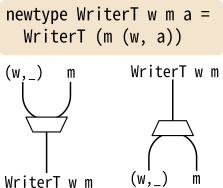
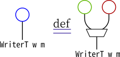
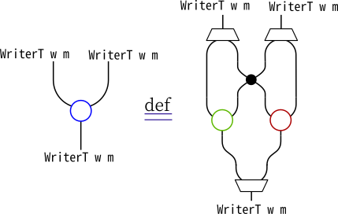
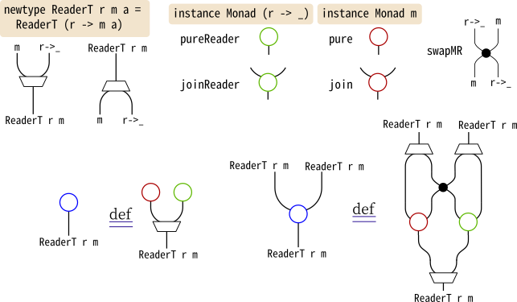

-- transformers パッケージのものとは（同型ですが）少し違いますnewtypeWriterT w m a =WriterT { runWriterT :: m (w, a) }instanceFunctor m =>Functor (WriterT w m) where{- 省略 -}instance (Monoid w, Monad m) =>Monad (WriterT w m) wherepure= pureWriter >>>pure>>>WriterTwhere pureWriter ::Monoid w => a -> (w, a) pureWriter a = (mempty, a) -- Writerモナド (w,_) のpure join =fmap runWriterT >>> runWriterT >>> joinT >>>WriterTwhere joinT :: (Monad m, Monoid w) => m (w, m (w, a)) -> m (w, a) joinT mwmwa =do (w, mwa) <- mwmwa (w', a) <- mwareturn (w <> w', a)
-- Writerモナド(w,_)のjoinが使えそうですjoinWriter ::Monoid w => (w, (w, a)) -> (w, a)joinWriter (w, (w', a)) = (w <> w', a)joinT :: (Monad m, Monoid w) => m (w, m (w, a)) -> m (w, a)joinT = \mwmwa ->do (w, mwa) <- mwmwa (w', a) <- mwareturn (w <> w', a)= \mwmwa ->do (w, mwa) <- mwmwafmap (\(w',a) -> (w <> w', a)) m= \mwmwa -> mwmwa >>= \(w,mwa) -> mwa >>= \(w',a) ->return (w <> w', a)= \mwmwa -> mwmwa >>= \(w,mwa) ->fmap (\(w',a) -> (w<>w',a)) mwa=fmap (\(w,mwa) ->fmap (\(w',a) -> (w<>w', a)) mwa) >>> join-- ^^^^^^^^^^^^^^^^^^^^^^^^^^^^^^^^^^^^^^^^^^^^-- ここで、この関数に注目してみます。-- この関数の型は (w, m (w, a)) -> m (w, a) です。-- また、関数の中身がjoinWriterに似ていますが、-- そのままではjoinWriterで置き換えられる部分がありません。-- -- なのでまず (w, m (w, a)) の外側のWriterモナドとmを入れ替え、-- fmap joinWriter :: m (w, (w, a)) -> m (w, a) と合成するとよさそうです。=fmap (swapWM >>>fmap joinWriter) >>> join=fmap swapWM >>>fmap (fmap joinWriter) >>> joinwhere swapWM ::Functor m => (w, m b) -> m (w, b) swapWM (w, mb) =fmap (\b -> (w,b)) mb
めでたく、WriterTのjoinも単純な自然変換の合成で書けました。まとめると、
-- Writerモナド (w, )のpureとjoinpureWriter ::Monoid w => a -> (w, a)pureWriter a = (mempty, a)joinWriter ::Monoid w => (w, (w, a)) -> (w, a)joinWriter (w, (w', a)) = (w <> w', a)-- Writerとmの入れ替えswapWM ::Functor m => (w, m b) -> m (w, b)swapWM (w, mb) =fmap (\b -> (w,b)) mbinstance (Monoid w, Monad m) =>Monad (WriterT w m) wherepure= pureWriter >>>pure>>>WriterT join =fmap runWriterT -- WriterT w m (WriterT w m a) -> WriterT w m (m (w, a))>>> runWriterT -- WriterT w m (m (w, a)) -> m (w, m (w, a))>>>fmap swapWM -- m (w, m (w, a)) -> m (m (w, (w, a)))>>>fmap (fmap joinWriter) -- m (m (w, (w, a))) -> m (m (w, a))>>> join -- m (m (w, a)) -> m (w, a)>>>WriterT-- m (w, a) -> WriterT w m a
これをストリング図に描いてみます。

WriterTの定義

WriterTのpure

WriterTのjoin
青丸をWriterT w mのモナド演算（pureまたはjoin）に当てていて、
同様に緑丸をWriterモナド、赤丸をモナドmに対応させています。
また、二つの線が交わるところにある点がswapWMです。
newtypeReaderT r m a =ReaderT { runReaderT :: r -> m a }instanceFunctor m =>Functor (ReaderT r m) where{- 省略 -}-- WriterTはWriterモナドを部品として作ることができました。-- ReaderTもそうなって欲しいですね。pureReader :: a -> (r -> a)pureReader =constjoinReader :: (r -> r -> a) -> (r -> a)joinReader f r = f r rinstance (Monad m) =>Monad (ReaderT r m) wherepure=pure>>> pureReader >>>ReaderT join =fmap runReaderT >>> runReaderT >>> joinT >>>ReaderTwhere joinT :: (Monad m) => (r -> m (r -> m a)) -> r -> m a joinT rmrma = \r -> rmrma r >>= \rma -> rma r
ふたたび、joinTが単純な自然変換の合成になっていませんが、
WriterTのときと同じ作戦でいってみましょう。
WriterT w mがWriter w = (w, )とmの合成Functorだったように、
ReaderT r mもmとReader r = (r -> _)の合成Functorです。
そのため、joinTの引数はFunctorの4段重ねr -> m (r -> (m _))になっています。
4段重ねの中央の2段、m (r -> _)を入れ替えられれば、Readerとmのjoinを使えます。
-- mとReaderの入れ替えswapMR :: (Functor m) => m (r -> b) -> r -> m bswapMR mrb r =fmap ($ r) mrb-- swapMRで中央を入れ替える方針で型を合わせるパズルをすれば、-- joinTと同じ型の自然変換が見つかります。joinT' :: (Monad m) => (r -> m (r -> m a)) -> r -> m ajoinT' =fmap swapMR >>>fmap (fmap join) >>> joinReader-- joinT' = joinT を確認します。joinT' rmrma= joinReader $fmap (fmap join) $fmap swapMR rmrma= joinReader $fmap (fmap join) $ \r -> swapMR (rmrma r)= joinReader $fmap (fmap join) $ \r r' ->fmap ($ r') (rmrma r)= joinReader $ \r r' -> join $fmap ($ r') (rmrma r)= \r -> join $fmap ($ r) (rmrma r)= \r -> rmrma r >>= ($ r)= \r -> rmrma r >>= \rma -> rma r= joinT rmrma
これをもとにストリング図を描くと、WriterTのものとラベル以外同じものが出来上がります。

ReaderTの定義
ExceptTの場合
ExceptTもReaderTやWriterTと”同じ構造”を持っています。
もはや細かい説明は不要かと思いますが、ExceptT e mはモナドmとモナドEither eの合成Functorで、
入れ替えをする自然変換swapEMによってモナドにしています。
newtypeExceptT e m a =ExceptT { runExceptT :: m (Either e a) }swapEM ::Monad m =>Either e (m b) -> m (Either e b)swapEM (Left e) =pure (Left e)swapEM (Right mb) =fmapRight mb
instanceMonad minstanceMonad nswap :: ∀b. n (m b) -> m (n b)-- 等式(1)pure>>> swap =fmap pure :: ∀b. m b -> m (n b)-- 等式(2)fmappure>>> swap = pure :: ∀b. n b -> m (n b)-- 等式(3)join >>> swap :: ∀b. n (n (m b)) -> m (n b)=fmap swap >>> swap >>>fmap join-- 等式(4)fmap join >>> swap :: ∀b. n (m (m b)) -> m (n b)= swap >>>fmap swap >>> join
「モナドmがモナドnに対する……」において、
mとnの順番には意味があります。
swap :: ∀b. n (m b) -> m (n b)があるからといって、逆向きの自然変換
reverseSwap :: ∀b. m (n b) -> n (m b)があったり、
それが等式(1)-(4)を満たす保証はまったく無いからです。